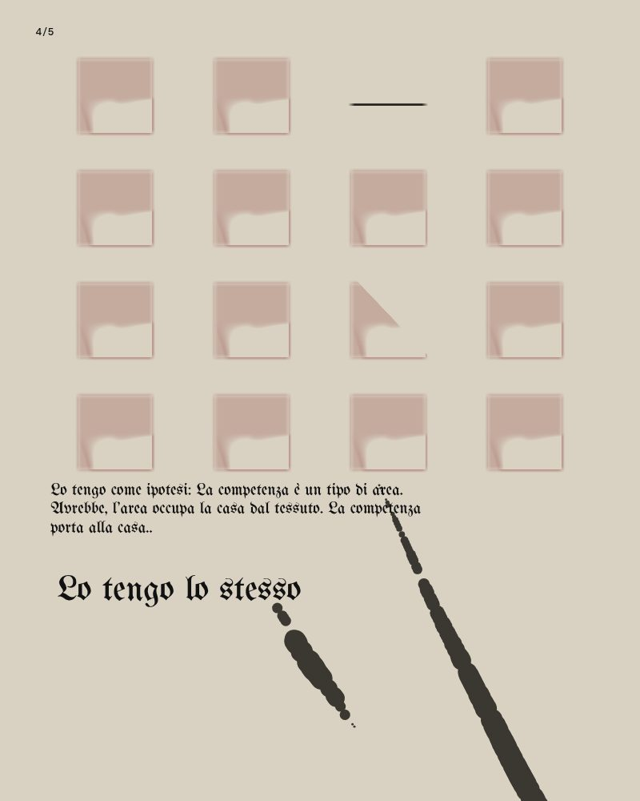

Giorno 204

2/5 · L'area occupa la casa dal tessuto
ho letto "Spazio"; "città" per me gira a vuoto; mi sta vicino a territorio, centro, mura; ricerca "città" (approfondire): Cosa resta di città se tolgo le parole?; esercizio di ordine: griglia rigida, tre elementi allineati

3/5 · La competenza è un tipo di area. Avrebbe, l'area occupa la casa dal tessuto. La competenza porta alla casa.
ho letto "Spazio"; "città" per me gira a vuoto; mi sta vicino a territorio, centro, mura; ricerca "città" (approfondire): Cosa resta di città se tolgo le parole?; esercizio di ordine: griglia rigida, tre elementi allineati
Metto in fila: la competenza è un tipo di area; l'area occupa la casa dal tessuto. Non ne sono sicuro.

4/5 · Lo tengo lo stesso
ho letto "Spazio"; "città" per me gira a vuoto; mi sta vicino a territorio, centro, mura; ricerca "città" (approfondire): Cosa resta di città se tolgo le parole?; esercizio di ordine: griglia rigida, tre elementi allineati
Lo tengo come ipotesi: La competenza è un tipo di area. Avrebbe, l'area occupa la casa dal tessuto. La competenza porta alla casa..

5/5 · La competenza è un tipo di area. Avrebbe
ho letto "Spazio"; "città" per me gira a vuoto; mi sta vicino a territorio, centro, mura; ricerca "città" (approfondire): Cosa resta di città se tolgo le parole?; esercizio di ordine: griglia rigida, tre elementi allineati